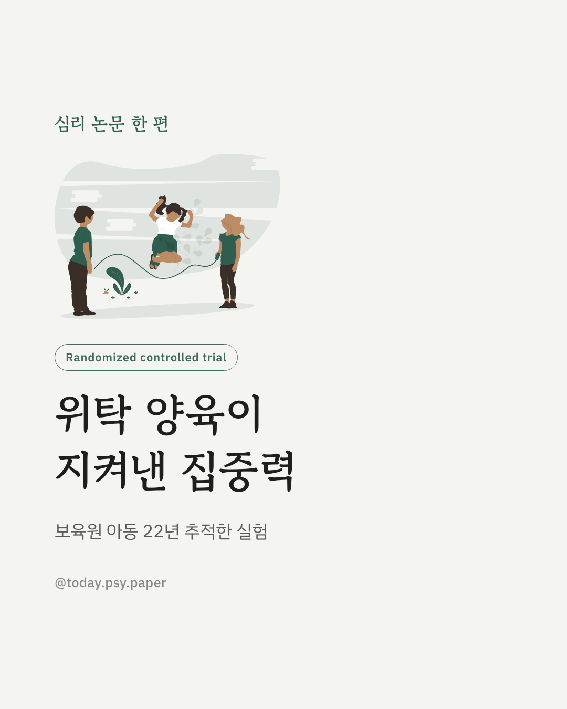
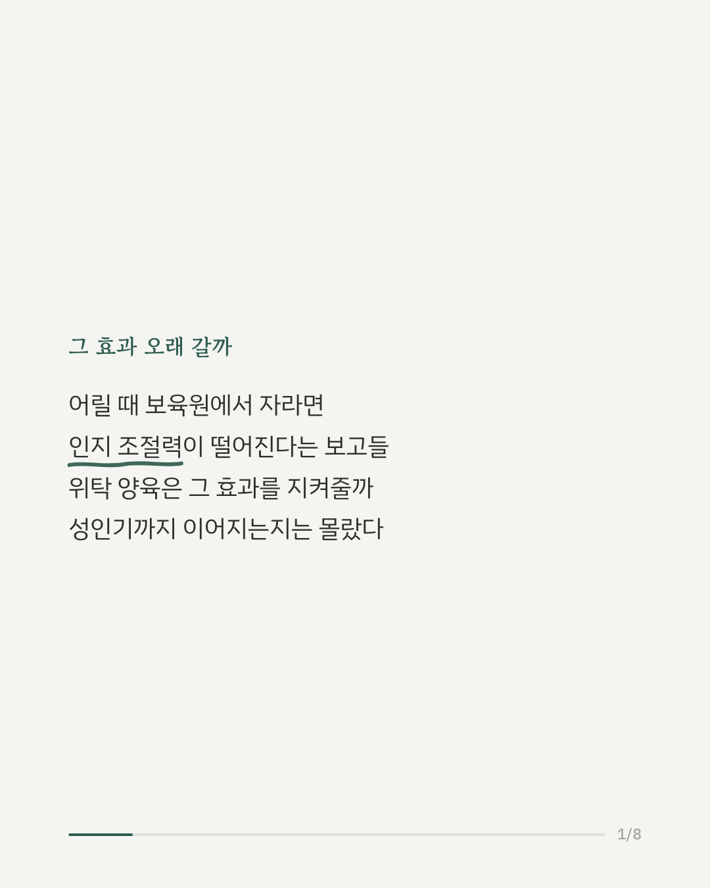
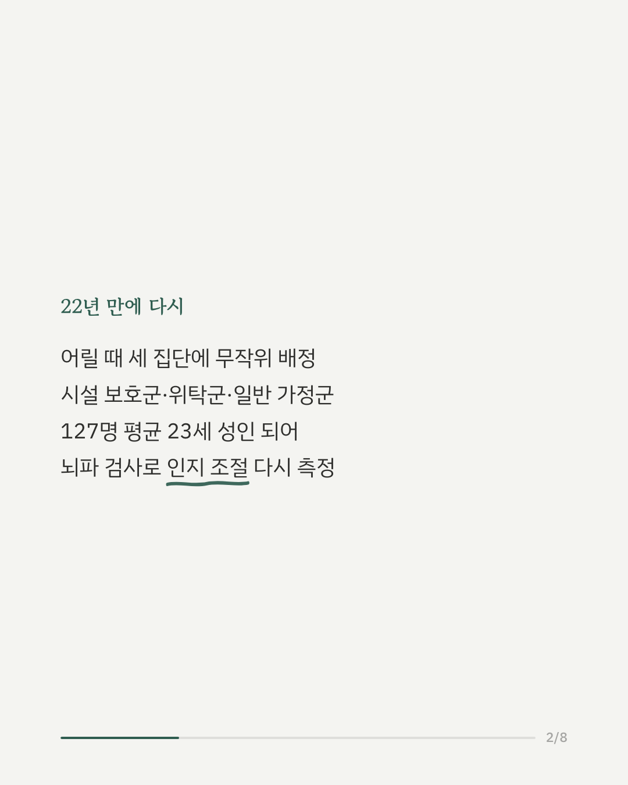
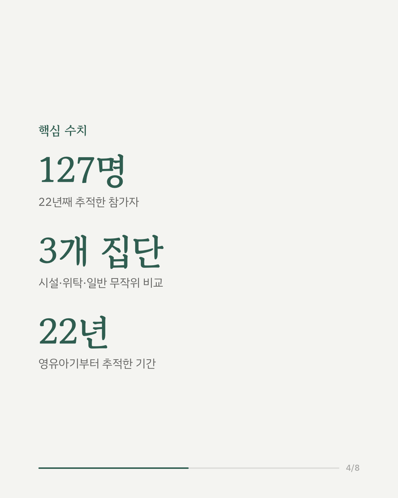
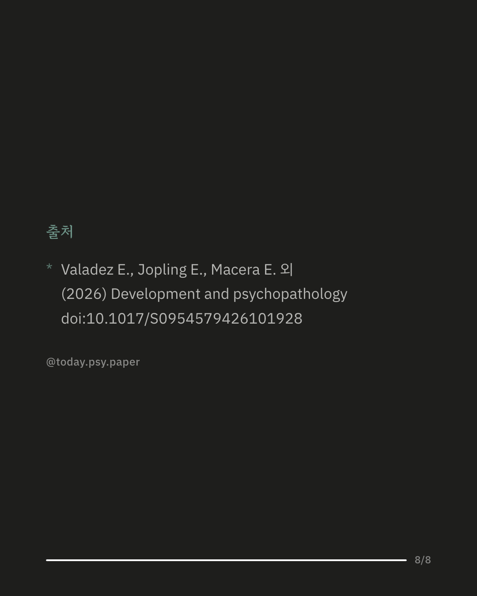

어릴 때 보육원 같은 시설에서 자란 아이가 위탁 가정으로 옮기면, 그 효과가 어른이 되어서까지 이어질까요. 루마니아에서 진행된 조기개입 연구(BEIP)가 22년 만에 참가자들을 다시 만나 답을 찾았습니다. 참가자 127명은 어릴 때 세 집단으로 무작위 배정되었습니다. 계속 시설에서 자란 집단, 위탁 가정으로 옮긴 집단, 시설을 경험하지 않은 일반 가정 집단입니다. 평균 23세가 된 이들에게 뇌파 검사를 실시해 주의 조절과 실수 감지 같은 인지 조절 능력을 측정했습니다. 결과는 갈렸습니다. 위탁 가정으로 옮긴 집단의 뇌 반응은 일반 가정 집단과 비슷했지만, 계속 시설에 있던 집단은 행동과 뇌 반응 모두에서 뚜렷한 차이를 보였습니다. 이 차이는 낮은 지능지수, 잦은 정신건강 증상과도 관련이 있었습니다. 다만 1990년대 루마니아의 극단적인 시설 환경에서 나온 결과라 다른 상황에 그대로 적용하긴 조심스럽고, 집단별 인원도 40명 안팎으로 많지 않았습니다. 출처: Development and Psychopathology (2026), 'Foster care intervention protects cognitive control skills in young adults exposed to institutional rearing' #발달심리학 #조기개입연구 #위탁가정 #아동발달심리
python3 publish.py 42773864